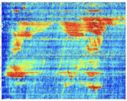
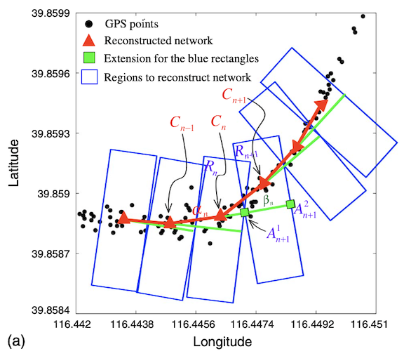

Sensing Traffic Congestion: Mapping to Cells
Overview
Almost all GPS data-based traffic studies rely on a digital map, yet this dependence introduces several well-known challenges: (i) map-matching is difficult, particularly when the map and GPS data use different coordinate systems; (ii) high-fidelity digital maps are not always readily available; and (iii) commercial GIS software can be expensive.
To eliminate these dependencies and rapidly diagnose traffic congestion, we conducted the following studies:
- Mapping to Cells (Freeway): We developed a simple method for extracting traffic dynamics directly from floating car (probe vehicle) data. It partitions a freeway network into small square cells, determines the traffic-flow direction in each cell, and constructs spatiotemporal diagrams colored by speed. A Beijing case study demonstrated that the method can reveal congestion efficiently through basic arithmetic operations, without GIS software, digital maps, or other external tools[1].
- Mapping to Cells (Urban Roads): We developed an urban-road companion to answer a practical question: in a city with thousands of intersections, where and when does turn-level congestion occur? Using only low-frequency probe vehicle data, the method reconstructs intersections and rapidly screens an entire road network for turn-level congestion. It is map-independent and computationally efficient because it discretizes two-dimensional space, making it well suited to large-scale urban congestion detection[2].
- Mapping to Cells-Based Travel Time Forecasting: Using the traffic dynamics generated by the Mapping-to-Cells (Freeway) approach（Data 1, Data 2）, we proposed a simple and efficient pattern-matching method for multi-step travel time forecasting. Rather than using travel time directly as the input, the method matches current and historical spatiotemporal traffic patterns and forecasts travel times from the most similar cases.
- Flexible Version of Mapping to Cells: This version uses rectangular cells with flexible shapes and dimensions rather than fixed square cells, allowing it to track the road network more accurately.
Publications

[1]Mapping to Cells: A Simple Method to Extract Traffic Dynamics from Probe Vehicle Data

[2]Network-Wide Identification of Turn-Level Intersection Congestion Using Only Low-Frequency Probe Vehicle Data

[3]Probe Data-Driven Travel Time Forecasting for Urban Expressways by Matching Similar Spatiotemporal Traffic Patterns

[4]Visualizing Traffic Dynamics Based on Floating Car Data